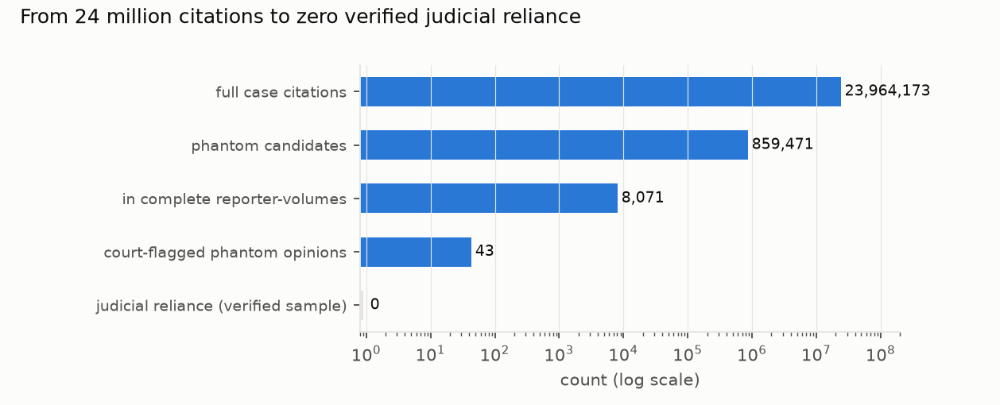
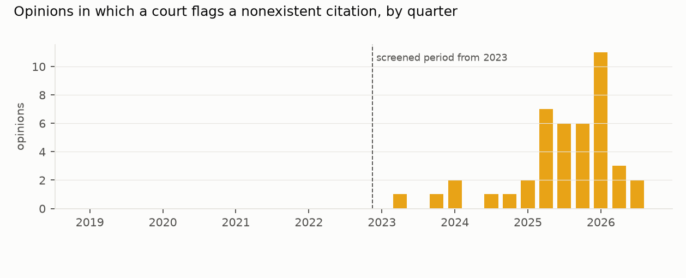

Verdict: Inconclusive.
- H1 (at least 20 opinions from 2023–2026 rely on a phantom citation): Inconclusive.
- The sample. No verified case of a judge relying on a nonexistent authority, in a seeded sample of 300 of the 3,182 opinions with reliance-type candidates in reporter-volumes complete enough to judge. The 95% upper bound is 40 opinions, which spans the Refuted (<10), Inconclusive and Supported (≥20) bands. The plan's rule was written for a full count, so a sample whose interval spans the bands cannot decide it (D9).
- The instrument. It is nearly blind where it matters.
- After the completeness filter, only 42 of 869 (4.8%) known incident orders keep any candidate.
- On the three in-corpus opinions that quote a judge's fabricated authorities, the screen flags none of the fabricated citations.
- Divided by the 4.8% recall, the sample's upper bound becomes roughly 830 opinions that the data cannot rule out.
- H2 (the 2019–2022 placebo period is near-empty): not scorable. Both periods have zero verified reliance, so the ratio is undefined.
- What the screen did find: courts flagging litigants' fakes.
- 43 opinions from 2023–2026 in which the court itself identifies a cited case as nonexistent: 0.51 per 10,000 opinions (0.38–0.69). These are 41 cases: two cases have two documents each, one an amended re-issue.
- In 2 more opinions the court only reports a party's assertion.
- None appear among the 116 placebo-period flag-sheet opinions.
- 38 of the 43 are already in the public AI Hallucination Cases database; five court-flagged opinions are not.
- And a corpus problem. CourtListener's "opinions" include party filings: pro se motions with a judge's endorsement, a pro se bankruptcy filing, and briefs e-filed in the Texas Fifteenth Court of Appeals. Two of these carry citations that exist nowhere. They are litigants' phantoms, not judges' (D8).
In plain terms
Lawyers and self-represented litigants have been caught citing court cases that do not exist, often invented by AI chatbots. A handful of judges have too. The worry is that the known cases are the tip of an iceberg: judges' opinions quietly relying on fake cases that nobody has noticed.
We screened every US court opinion from 2019 to September 2026 in the largest open archive, looking for cited cases that cannot be found anywhere. In a random sample of the suspicious citations, every one traced to a real case with a typo, a scanning error or an unusual citation style. So we found no judge relying on a fake case.
But this does not show the iceberg is absent. The screen could only judge citations to older federal reporters that the archive covers fully. It missed the fake citations in every known judicial incident we could test it on: a California-style citation slipped through as genuine, and fake Georgia cases were taken for misattributed real ones. What the screen found plainly is the other side of the problem: 43 opinions since 2023 in which a court calls out a litigant's fake citations, none before 2023. All but five of them are already in the main public list of such incidents.
What was asked
The lead (legal-digital-humanities-phantom-citations-judicial-opinions) proposed a systematic screen of judicial
opinions, not filings, for citations to nonexistent authority.
- The public record is incident-driven. Charlotin's AI Hallucination Cases database (2,203 incidents on
2026-10-21; 1,474 US incidents dated in the screened window, 9 attributed to a judge) counts what someone noticed.
- The plan (plan.md, committed before any opinion text was extracted) set two tests:
- H1: at least 20 verified opinions filed 2023-01-01 to 2026-09-30 that rely on a phantom citation
(Supported if at least 20; Refuted if fewer than 10);
- H2: a placebo-period (2019–2022) reliance rate at most a quarter of the screened-period rate.
- Flags are separate. Opinions that flag somebody else's bad citation are the known phenomenon and are reported
separately.
How it was done
- Index. 17.6 million citation rows (reporter-volume-page to case) and 10 million case names from the CourtListener bulk data (D1–D3).
- Screen (
screen_shards.py; frozen at D6, rescheduled in chunks at D7, 743 minutes on 26 workers).- eyecite extracts every full case citation in 1,665,327 opinions dated 2019-01-01 to 2026-09-30.
- A citation that resolves by reporter-volume-page to a case sharing a distinctive token with the cited name is consistent. Otherwise the cited name is searched across all case names, with abbreviations expanded (D6).
- A citation that neither resolves to a matching case nor matches any name is a candidate: 859,471 of them.
- Completeness filter (preregistered). Only citations into reporter-volumes where at least 98% of known pages are present can be phantoms; coverage is measured leave-one-opinion-out (D6). This drops 851,400 candidates (99.1%) and keeps 8,071.
- Reliance or flag, by a fixed list of context words (sanction, fictitious, non-existent, AI, ...).
- Verification sheets (
analysis.py prepare). Every opinion is verified up to 300 per sheet; above that, a seeded random sample of 300.- Sampled: the screened-reliance sheet (3,182 opinions) and the placebo-reliance sheet (3,646).
- Verified in full: the screened-flag (202) and placebo-flag (116) sheets.
- Also: a sample of 100 misattributions.
- Verification (D8, D9). Each candidate was read with the index's names at the cited page (
verify_aid.py, a reading aid), and doubtful ones were looked up in CourtListener's public search. The labels are:- real: a case the index or CourtListener holds under the cited or a corrected citation, that independent opinions cite, or that an official reporter lists;
- phantom: a case found nowhere;
- phantom-flag: the court itself says the case does not exist;
- phantom-party-asserted: only a party says so.
The document holding every phantom was read to confirm it is an opinion.
- Pace. All 1,036 sheet rows and 100 misattributions were labelled in about 26 minutes. 117 rows carry a
written verdict; the rest, read and found real, default to "real" (labelled = 0 in verified.csv).
- Independent check. The reviewer re-checked 113 rows: all 60 phantom rows, the party-filing and unverifiable
rows, and a seeded sample of 48 "real" rows, 36 of them unwritten defaults. Every "real" call was confirmed.
Results
The sample of reliance candidates (results/figures/F1_funnel.png)


Of the 335 candidates in the 300 sampled screened-period opinions: - 333 were real cases or not cases at all. Two "unverifiable" rows (one in each period) turned out to be an article in F.R.D., Schwarzer, 99 F.R.D. 465 (1984), and are now real (D9). - The other two sit in party filings that CourtListener holds as opinions (see below).
The real ones were mis-scored for four reasons: - Citation style the parser misread. California's "(10th Cir. 1984) 732 F.2d 775" form made the cited "name" "10th cir". Other names came out as abbreviations: "DYFS v. A.W.", "NRDC v. FAA", "CREW v. FEC". - Typos by the courts themselves. Feist cited as 499 U.S. 240 instead of 340. Plyler v. Doe as 457 U.S. 2020. Christiansburg Garment as 484 U.S. 412 instead of 434. Garamendi v. Henin as 684 F.3d instead of 683. The sample holds 14 such volume or page slips and 3 wrong reporters. - OCR damage. "Blurne v. State" for Blume, "Slricklana v. Washl ngton" for Strickland. - Index gaps. Unpublished table decisions, and cases missing from CourtListener. State v. Liason, 2026-Ohio-243, is missing from CourtListener but appears in the Ohio Reporter of Decisions.
The placebo-period sample (350 candidates, 300 opinions) looks the same. The sample-based estimate is 0 opinions of 3,182 (95% interval 0–40), or 0 per 10,000 screened-period opinions (0–0.046).
What the filter leaves (primary.json → reporters)
The completeness filter is what makes a miss meaningful, but it keeps almost nothing in the reporters where 2023–2026 citations land:
| reporter | candidates | kept |
|---|---|---|
| Westlaw (WL) | 650,612 | 1 |
| F.4th | 9,252 | 0 |
| F. Supp. 3d | 22,061 | 209 |
| Cal.App.5th | 8,438 | 28 |
| So.3d | 4,229 | 0 |
| A.3d | 4,076 | 6 |
| N.E.3d | 2,049 | 1 |
| F.3d | 10,359 | 2,335 |
| U.S. | 2,168 | 1,065 |
| F.2d | 1,981 | 696 |
Of the 8,071 kept candidates, 51% are in F.3d, U.S. Reports and F.2d. In effect, H1 was tested on citations into older federal reporters and the U.S. Reports, which are not where recent fabricated citations land.
What the screen can and cannot see (recall)
- Known incident orders. Of the 1,474 US incidents in the database dated in the window, 879 were matched to 869
distinct orders in the corpus (D9 fixed a regex that had dropped New Mexico courts and added a same-day caption
rule; D10 selects US incidents by the database's own country field).
- Before the completeness filter, the screen produced some candidate in 465 of the 869 (53.5%; 50.2–56.8%). That counts any candidate in the order, not necessarily the fabricated citation, so it is an upper bound.
- After the filter, which is what the verified counts rest on, only 42 of 869 (4.8%; 3.6–6.5%) keep any candidate.
- Judge-attributed incidents. Five of the nine are in the corpus. Four of the five are a reviewing court's
opinion about a trial court's order (H.C. v. Contreras, Payne v. State, Shahid v. Esaam, Henry County Schools
v. Grant); the trial-court orders themselves are not in CourtListener. Only In re CorMedix is the opinion that
relied.
- CorMedix was caught as reliance before the filter, on three Westlaw citations, and lost to the filter.
- So reliance recall is 1 of 1 before the filter and 0 of 1 after it.
- Blind to the known pattern. The frozen screen was run on the three reviewing-court opinions that quote the
fabricated authorities (reviewer's check,
review/reviewer_checks/judge_test.*). It marks none of the fabricated citations as a candidate:- In H.C. v. Contreras the fictitious "Enrique M. v. Angelina V. (2005) 15 Cal.App.5th 788" resolves into an unrelated case. Because the parser extracts no case name from California-style citations, the screen marks it consistent (an empty cited name is treated as consistent).
- In Shahid v. Esaam, a dozen fictitious Georgia cases with full citations land as misattributions: a real case sits at the cited page under a different name. Misattributions are verified only as a sample and never counted. Two others pass as consistent because one shared surname is enough (Brown v. Brown resolving to Brown v. State).
- In Payne v. State, the nonexistent Bryant v. State, 268 Ga. App. 362, is a misattribution.
- Why so blind. The draft's explanation (Westlaw citations and misquoted real cases) holds only for CorMedix. The
other fabrications are invisible for three reasons:
- a fabricated citation with a plausible volume and page lands inside a real case;
- the screen reads such a mismatch as a misattribution rather than a phantom;
- California-format citations carry no name to compare.
Add the completeness filter, which removes the modern reporters altogether. A better instrument would check every misattribution and compare quotations and holdings, not only existence. - Recall-corrected bound. The sample's upper bound of 40, divided by the 4.8% post-filter recall, is about 830 opinions. The plan promised a recall-corrected count, and this is the honest version of it: a bound, not an estimate. - Capture–recapture. With no verified reliance and no overlap, the two-source estimate is uninformative.
Courts flagging litigants (the flag sheets; results/figures/F2_flagged_by_quarter.png)


- Screened period (2023–2026). All 202 flag-sheet opinions were verified.
- In 43 of them the court itself identifies at least one cited case as nonexistent: 58 citations, such as "Las Cruces Sun-News v. City of Las Cruces", "Petersen v. Iran Air", "Estate of Riddell v. City of Portland", and Missouri tables of "Fictitious citation" entries.
- For "Las Cruces Sun-News", CourtListener holds a real near-namesake (2003-NMCA-102). The court's finding is kept.
- In 2 further opinions the court only reports a party's assertion that a case does not exist (D9).
- The 43 opinions are 41 cases: Morgan and Schoene each have two documents, and Schoene's second is an amended re-issue of the first.
- Placebo period (2019–2022). None among the 116 flag-sheet opinions. The only court flags there are of litigants' miscited real cases: "United States v. Kajakajian" for Bajakajian (2021), and Hatahly (2019), which the context-word list missed.
- The public database. 38 of the 43 are in it.
- 26 by matching the order itself.
- 6 more by caption, because the database lists the case under another order or date (the draft matched only the nearest order within 45 days).
- 6 by hand, where the corpus caption is garbled or differs from the database's: Zaykariya, In re Nwaubani, Puerto Rico Soccer League (name score 84.2, just under the threshold), Qamar (anonymised in the database as "X v. Board of Trustees of Governors State University"), Flowz Digital and Brick.
- Five court-flagged opinions appear in no field of the database:
- Freeland v. Selene Finance (M.D.N.C., 2025-02-05);
- Carrington v. Detroit Buildings, Safety Engineering and Environment Department (E.D. Mich., 2025-02-27);
- Simmons v. City of Hurricane (S.D. W. Va., 2025-12-08);
- Tarani-Alike Johnson v. Wells Fargo Bank (N.D. Cal., 2026-01-05);
- Piper v. State of Indiana (S.D. Ind., 2026-08-27).
Both earlier versions were wrong. The draft said 19 were not in the database. The first revision said none were, because its name match was vacuous: three Cyrillic captions normalised to "v" and matched every caption (D10).
Party filings in the opinion corpus
- What was found. Reading the documents behind the candidates showed that CourtListener's opinion corpus
includes papers that are not opinions:
- a pro se motion carrying a magistrate judge's "Denied … SO ORDERED" endorsement;
- a pro se filing in the Bankruptcy Court for the Northern District of Texas;
- an appellant's reply brief e-filed in the Texas Fifteenth Court of Appeals.
- Phantoms in filings. Two of these cite cases that exist nowhere (El-Koury v. Hammer, 198 S.W.3d 819; Sterner v. Marriott Int'l, 390 S.W.3d 599). They are recorded as litigants' phantoms and not counted.
- How common filings are. The reviewer's scan of one shard puts a floor of about 0.15% on filings among screened-period documents (about 1,200 of 836,076), concentrated in the Texas Fifteenth Court of Appeals' e-filing feed. That is negligible for rate denominators, but it matters for the numerator: 2 of the 3 phantom-type items in the reliance samples were filings.
Misattributions
The 100 sampled misattributions are artefacts, with one exception: citations whose case is missing from the index (Westlaw numbers, neutral citations, new F.4th cases), where resolution returned the case spanning that page. The exception is a court noting that it "cannot locate the State v. Flores, 185 A.3d 1283 (Del. 2018) decision" that a party claimed it had issued. The judge-incident checks above show the limit of a 100-row sample: fabricated citations can sit among the 1,027,677 screened-period misattributions without being seen.
What this does and does not show
- No judge was found relying on an invented case, in the part of the record this screen can see. Every sampled suspicious citation traced to a real case.
- That part excludes the cases at issue. The screen sees only citations into fully covered, mostly older reporters. It flagged none of the fabricated citations in the known judicial incidents in the corpus. The data cannot exclude several hundred undetected opinions. Answering H1 needs an instrument that verifies misattributions and quotations, and reaches Westlaw citations and modern reporters.
- Courts calling out fabricated citations is recent and well recorded. 43 opinions since 2023, none in 2019–2022. 38 are already in the public database, and five are not.
- The corpus is not purely opinions. About 0.15% or more of "opinions" are party filings, and they produced most of the phantom-type items found.
- Adjudication. All verification was done by the study's AI agent, which also wrote the screen, at a pace of about 26 minutes for 1,136 rows. An independent re-check of 113 rows found no wrong "real" call. External lookup was CourtListener's public search, plus one official reporter.
Process and deviations
- Preregistration:
plan.md. - Deviations (
deviations.md):- D1–D3: index construction, pilot fixes, and the validator calling the screen's own
judge(); - D4: the recall set;
- D5: analysis parameters fixed before output;
- D6: abbreviation-aware matching, coverage-based completeness, the freeze;
- D7: chunked scheduling;
- D8: verification rules, including party filings;
- D9: changes after the independent review — label vocabulary, two party-asserted flags, the F.R.D. article, the matcher's New Mexico bug and same-day rule, recall before and after the filter, the H1 rule for a sampled sheet, the database comparison in code, and two items not delivered (rates by court level, because the court field is empty; and an uninformative capture–recapture estimate);
- D10: changes after the confirmation pass — the vacuous name match in the database comparison, US incidents selected by the database's country field (1,474, not 1,532; matches unchanged), four more hand matches, and 41 cases, not 42.
- D1–D3: index construction, pilot fixes, and the validator calling the screen's own
- Independent review: Fable, 2026-10-22, "fix first" (
review/review.md). Confirmation pass 2026-10-23 (review/confirmation.md): every finding fixed except the database comparison, whose fix had introduced the vacuous name match. That is repaired in D10, and the re-run reproduces the reviewer's recount exactly (38 of 43; the same five unrecorded).
Reproducing it
- Index and screen:
code/build_index.py,code/build_names.py,code/extract.py,code/screen_shards.py --workers 26. - Sheets:
code/analysis.py prepare. - Labels:
code/verify_aid.py(a reading aid). The hand labels are indata/screen/labels/(copied toresults/verification/) and are assembled intoverified.csvbycode/assemble_verified.py. - Scoring:
code/match_charlotin.py, thencode/analysis.py score. - Outputs:
results/tables/prepare_summary.json,primary.json(incl.flag_vs_database,reporters,recall_detection,recall_reliance),charlotin_coverage.json.